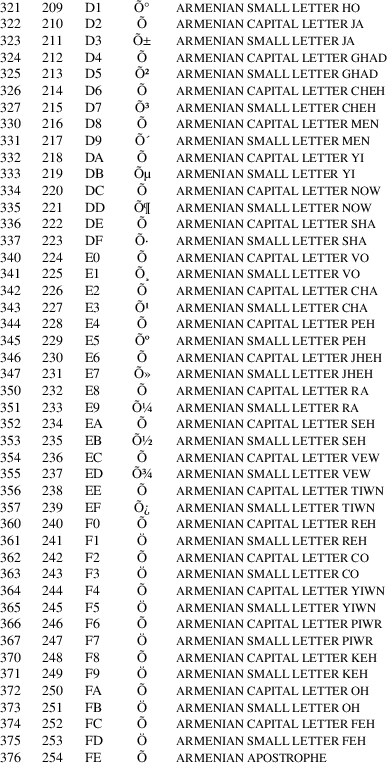

armscii-8 − Armenian character set encoded in octal, decimal, and hexadecimal
The Armenian Standard Code for Information Interchange, 8-bit coded character set.
ArmSCII-8
characters
The following table displays the characters in ArmSCII-8
that are printable and unlisted in the ascii(7)
manual page.

ascii(7), charsets(7), utf−8(7)